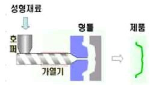
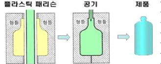
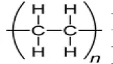
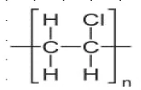

특별한국어능력시험문제(고무·플라스틱)
Q. 1. 방진마스크를 착용해야 하는 경우는?
① 유기 증기가 발생하는 화학 공장
② 인체에 유해한 분진발생 작업장
③ 암모니아 가스를 사용하는 작업장
④ 벤젠 및 이소프로필알코올 등의 화학물질을 사용하는 작업장
Right Ans:- ② 인체에 유해한 분진발생 작업장
Q. 2. 화학물질이 튀는 것으로부터 눈을 보호하기 위하여 사용하는 보호구는?
① 보안경
② 밀폐형 고글
③ 도수안경
④ 선글라스
Right Ans:- ② 밀폐형 고글
Q. 3. 청력보호구의 올바른 착용 방법은?
① 소음이 발생하는 시간동안 90%만 착용하고 10%는 착용하지 않아도 된다.
② 청력보호구의 착용이 불편하다면 착용하지 않아도 무방하다.
③ 소음발생시 50%만 착용하고 소음이 상대적으로 적을 때는 착용하지 않는다.
④ 소음이 발생하는 시간동안 100% 착용한다.
Right Ans:- ④ 소음이 발생하는 시간동안 100% 착용한다.
Q. 4. 보호 장갑에 대한 설명 중 틀린 것은?
① 장갑을 사용 시에는 손상된 부위가 있는지 확인한 후 사용한다.
② 가격이 높을수록 많은 보호가 되므로 비싼 장갑을 사용하는 것이 좋다.
③ 장갑을 착용한 채 컴퓨터를 사용해서는 안 된다.
④ 장갑 사용 시에는 장신구를 제거한 후 사용하여야 한다.
Right Ans:- ② 가격이 높을수록 많은 보호가 되므로 비싼 장갑을 사용하는 것이 좋다.
Q. 5. 작업장 안전수칙에 대한 설명 중 틀린 것은?
① 안전수칙을 준수하고 반드시 적합한 개인보호구를 착용한다.
② 최소한의 화학약품 사용하여 사고의 가능성을 줄이고, 작업시 폐기물의 양을 최소화 한다.
③ 가스 사용시 사용 후에 중간밸브 및 주 밸브는 항상 틀어 놓는다.
④ 유독성이나 물질을 다루는 작업시, 피부 접촉을 피할 수 있는 보호 장구를 반드시 착용한다.
Right Ans:- ③ 가스 사용시 사용 후에 중간밸브 및 주 밸브는 항상 틀어 놓는다.
Q. 6. 공작기계 작업시의 주의사항으로 틀린 것은?
① 장갑 착용은 원칙적으로 금지하나 꼭 필요한 경우 손가락 부분을 1/2 절단하여 사용한다.
② 보안경 및 작업복은 작업환경에 따라 착용하지 않아도 된다.
③ 가공을 막 끝낸 공작물이나 칩은 매우 뜨거우므로 장갑을 끼고 작업한다.
④ 작업의 속도를 늦추거나 멈추려 할 때는 반드시 기계스위치를 이용한다.
Right Ans:- ② 보안경 및 작업복은 작업환경에 따라 착용하지 않아도 된다.
Q. 7. 화재발생시 대처 요령으로 알맞지 않은 것은?
① 화재발생시 “불이야”하고 주위에 화재 사실을 알리고 119에 신고한다.
② 피난 시 가장 가까운 통로나 계단을 통해 신속히 대피한다.
③ 초기 소화가 가능한 경우에는 신속히 소화기 등으로 진화한다.
④ 바람이 없는 실내에서 소화기를 사용할 경우에는 편한 위치에서 진화한다.
Right Ans:- ④ 바람이 없는 실내에서 소화기를 사용할 경우에는 편한 위치에서 진화한다.
Q. 8. 소화기에 대한 설명으로 부적절한 것은?
① 소화기는 화재 초기에 중요한 소화기구이다.
② 소화기는 고온다습한 곳과 직사광선을 피하여 보관한다.
③ 소화기는 캐비넷 등에 보관하고, 시건장치를 해놓는 것이 좋다.
④ 소화기는 수시로 노즐 및 압력게이지를 확인하여 이상이 있는 경우 새 것으로 교체한다.
Right Ans:- ③ 소화기는 캐비넷 등에 보관하고, 시건장치를 해놓는 것이 좋다.
Q. 9. 화재시 피난 및 대피요령을 설명한 것으로 맞지 않는 것은?
① 피난시 외부로 나가는 통로를 이용한다.
② 화재시 지체 없이 피난한다.
③ 연기가 많을 때에는 최대한 자세를 낮춰 이동한다.
④ 중요한 물건이 있을 경우 신속히 들어가서 가지고 나온다.
Right Ans:-
Q. 10. 위험물 경고표지입니다 연결이 틀린 것은?
① - 인화성물질 경고
② - 폭발성물질 경고
③ - 부식성물질 경고
④ - 급성독성물질 경고
Right Ans:- ② - 폭발성물질 경고
Q. 11. 고무에 혼합하여 가열 또는 기타의 처리를 함으로써 고무분자간에 연결을 통해 탄성체의 고무로 하는 것이 아닌 것은?
① 가소제
② 가황제
③ 가교제
④ 난연제
Right Ans:- ① 가소제
Q. 12. 배합고무에 가하여 가황고무 장기사용 중의 산화에 의한 노화를 방지, 사용수명을 연장하기 위하여 넣는 첨가제는?
① 폴리머안정제
② 노화(산화)방지제
③ 가황촉진제
④ 연화제
Right Ans:- ② 노화(산화)방지제
Q. 13. 유황가황에 있어서 공존하는 지방산을 만들어 가황촉진재의 활성을 높이는 배합제로 고무 배합상 반드시 사용하여야 하는 것은?
① 유황
② 폴리아민
③ 산화마그네슘
④ 산화아연
Right Ans:- ④ 산화아연
Q. 14. 가황제와 함께 작용하여 소량의 사용으로 가황속도를 증진시키는 첨가제는?
① 노화방지제
② 착색제
③ 가황촉진제
④ 발포제
Right Ans:- ③ 가황촉진제
Q. 15. 고무제조시 소량을 첨가한 것만으로 가황의 속도를 늦춰, 가황시기가 너무 빨리 되는 것을 지연 시켜주는 물질은?
① 가황지연제
② 가황촉진제
③ 연화제
④ 가소제
Right Ans:- ① 가황지연제
Q. 16. 노화방지제의 종류가 아닌 것은?
① 폴리머안정제
② 금속해방지제
③ 오존방지제
④ 연화제
Right Ans:- ④ 연화제
Q. 17. 고무의 상용성 및 내한성, 비오염성, 색안정성이 좋고 내산화가 양호하여 모든 목적의 고무제조에 사용이 가능한 가소제는?
① 방향족유
② 파라핀계유
③ 나프텐계유
④ 지방족계유
Right Ans:- ③ 나프텐계유
Q. 18. 배합고무의 표면 점착성을 증진시키기 위한 배합제는?
① 가소제
② 발포제
③ 점착부여제(Tackifiers)
④ 가화지연제
Right Ans:- ③ 점착부여제(Tackifiers)
Q. 19. 점착부여제로서 요구사항이 아닌 것은?
① 사용하는 고무소재와 잘 섞여야 한다.
② 점착부여제 자체의 점착성은 고려사항이 아니다.
③ 고무배합물에 부여된 점착성 효력의 물성변화가 작은 것이어야 한다.
④ 점착부여제가 강한 점착성을 가지고 있을 필요가 있다.
Right Ans:- ② 점착부여제 자체의 점착성은 고려사항이 아니다.
Q. 20. 고무용 안료로써 갖추어야 할 조건이 아닌 것은?
① 내열성이 있어야 한다.
② 유황, 황화수소에 대하여 안정하여야 한다.
③ 노화방지제 등의 배합에 변화를 일으켜야 한다.
④ 내수성이어야 한다.
Right Ans:- ③ 노화방지제 등의 배합에 변화를 일으켜야 한다.
Q. 21. 단위 공정별 주요설비의 약액제조 공정의 구성 요소가 아닌 것은?
① 탱크류
② 교반류
③ 펌프류
④ 탈수기
Right Ans:- ④ 탈수기
Q. 22. 중합반응을 위한 반응기, 교반기로 구성되어 있는 공정은?
① 반응공정
② 약액제조공정
③ 회수공정
④ 저장 및 혼합공정
Right Ans:- ① 반응공정
Q. 23. 기타 대형설비는?
① 용접기
② 암모니아 냉동기
③ 컴퓨터
④ 압출기
Right Ans:- ② 암모니아 냉동기
Q. 24. 건조를 위한 대형 건조기(apron dryer, expander)와 성형을 위한 성형기(baler)로 구성 되어 있는 공정은?
① 응고 및 탈수공정
② 반응공정
③ 건조 및 성형공정
④ 회수공정
Right Ans:- ③ 건조 및 성형공정
Q. 25. 증류탑(column)의 종류가 아닌 것은?
① 흡수탑
② 스트리핑 칼럼
③ 추출탑
④ 압출탑
Right Ans:- ④ 압출탑
Q. 26. 건조된 고무 입자(crumb)를 직육면체의 고무 덩어리로 성형하는 설비로써, 직육면체 몰드에 25kg, 35kg의 고무를 고압으로 압착하여 베일(bale)이라는 최종 고무제품을 생산한다. 이것은 어떤 공정에 대한 설명인가?
① 응고 및 탈수공정
② 반응공정
③ 건조 및 성형공정
④ 회수공정
Right Ans:- ③ 건조 및 성형공정
Q. 27. 석유화학 원료를 중합시켜 고분자 물질로 합성한 공산품에 해당되는 것은?
① 합성고무
② 천연고무
③ 친환경고무
④ 재활용고무
Right Ans:- ① 합성고무
Q. 28. 합성고무의 종류가 아닌 것은?
① NR
② EPDM
③ SER
④ BMW
Right Ans:- ④ BMW
Q. 29. 합성고무의 생산 공정이 아닌 것은?
① 중합공정
② 제품공정
③ 품질검사 및 포장공정
④ 세척공정
Right Ans:- ④ 세척공정
Q. 30. 성형된 합성고무제품의 외관과 이물 혼입여부를 검사하여 포장 필름으로 밀봉한 후, 약 1톤 정도를 담을 수 있는 대형 박스에 적재하여 보관 창고로 이송하는 공정은?
① 중합공정
② 저장 및 혼합공정
③ 품질검사 및 포장공정
④ 제품공정
Right Ans:- ③ 품질검사 및 포장공정
Q. 31. 중간 제품인 라텍스를 제품의 종류, 무니(mooney) 수준, 결합 모노머 함량 등의 품질 특성에 따라 구분 저장하고 저장된 라텍스를 원하는 품질특성으로 혼합하는 공정은?
① 응고 및 탈수공정
② 저장 및 혼합공정
③ 품질검사 및 포장공정
④ 건조 및 성형공정
Right Ans:- ② 저장 및 혼합공정
Q. 32. 점착성과 반발탄성이 우수한 고무로, 보강제를 사용하지 않아도 물성치가 우수하여 전체 고무 사용량의 40~45%를 점유하고 있다. 무엇에 대한 설명인가?
① SER
② NR
③ 천연고무
④ EPDM
Right Ans:- ② NR
Q. 33. 합성고무의 핵심적인 품질을 결정하는 공정으로, 약품의 저장부터 약액의 제조, 약액의 투입, 중합반응, 미반응 모노머의 회수공정까지를 일컫는다. 무엇에 대한 설명인가?
① 저장 및 혼합공정
② 응고 및 탈수공정
③ 중합공정
④ 건조 및 성형공정
Right Ans:- ③ 중합공정
Q. 34. 진공펌프(vaccum pump) 가동 절차의 설명으로 옳지 않은 것은?
① 모든 베어링에 윤활유를 공급하고 윤활 장치를 가동한다.
② 회전 부위들을 손으로 돌려서 부드럽게 회전이 되는지를 체크한다.
③ 윤활 장치, 케이스의 오일 수위계 등을 체크한다.
④ 냉각수 밸브를 잠그고 실린더를 보온시킨다.
Right Ans:- ④ 냉각수 밸브를 잠그고 실린더를 보온시킨다.
Q. 35. 압축기(compressor) 가동 절차의 설명 중 옳지 않은 것은?
① 오일 수위를 확인하여 부족 시 수위계의 표시선까지 오일을 보충한다.
② 냉각수를 공급하고 냉각장치가 작동하는지를 점검한다.
③ 압축기 가동을 멈추고 이음, 진동, 마찰 등의 특이 사항이 있는지를 확인한다.
④ 윤활설비의 오일 저장조에 윤활유를 채우고 압축기가 무부하 상태인지를 체크한다.
Right Ans:- ③ 압축기 가동을 멈추고 이음, 진동, 마찰 등의 특이 사항이 있는지를 확인한다.
Q. 36. 냉동기의 가동 절차에 대한 설명 중 옳지 않은 것은?
① 윤활유와 오일을 보충하고 냉각수의 주 밸브를 연다.
② 흡입부 밸브를 약간 열고 토출구 밸브를 모두 열어야 한다.
③ 냉동기의 압축기 부분에 있는 모든 내부 밸브를 열어야 한다.
④ 현장 조작반의 부하 조절기를 최대 위치로 설정한다.
Right Ans:- ④ 현장 조작반의 부하 조절기를 최대 위치로 설정한다.
Q. 37. 펌프류 가동 절차의 설명 중 옳지 않은 것은?
① 현장 조작반의 스위치가 자동으로 전환되어 있는지를 확인한다.
② 현장 조작반의 가동 스위치(start button)를 눌러서 펌프를 가동시킨다.
③ 정상 작동이 확인되면 조정실과 연락을 취하여 운전모드를 자동으로 전환한다.
④ 필요시, 자동모드에서 원격 가동정지 및 재가동에 이상이 없는지를 확인한다.
Right Ans:- ① 현장 조작반의 스위치가 자동으로 전환되어 있는지를 확인한다.
Q. 38. 저장 중인 중간품의 혼합을 통해 정확한 물성의 제품을 생산하기 위한 지시서이다. 주로 혼합 비율과 첨가제 투입량, 혼합 시간, 제품 생산 시간 등이 기록된다. 무엇 에 대한 설명인가?
① 중간품 혼합 처방(blend order)
② 시험지시서
③ 반응기 투입처방(charge order)
④ 약액제조처방(make-up order)
Right Ans:- ① 중간품 혼합 처방(blend order)
Q. 39. 단위 시간당 반응기에 투입되는 약액이나 약품들의 단위 시간당 투입량, 목표 전환율, 반응시간, 반응 온도 등이 기록된 지시서로, 기본적인 사항은 제품 품종별 처방에 따른다. 무엇에 대한 설명인가?
① 중간품 혼합 처방(blend order)
② 기타 지시서
③ 반응기 투입처방(charge order)
④ 약액제조처방(make-up order)
Right Ans:- ③ 반응기 투입처방(charge order)
Q. 40. 단기적으로 운전 조건을 조정하거나 보정 작업을 실시하고자 할 때 발행되는 지시서로 변경하고자 하는 내용, 유효 기간, 주의 사항 등이 기록된다. 무엇에 대한 설명인가?
① 중간품 혼합 처방(blend order)
② 기타 지시서
③ 반응기 투입처방(charge order)
④ 제품 품종별 처방(basic recipe)
Right Ans:- ② 기타 지시서
Q. 41 . 유기약품, 인화성 자재에 대한 대책으로 옳지 않은 것은?
① 인화성의 용제는 모두 철제의 용기에 담고 이것을 사용하는 작업장에는 반드시 화학소화기를 비치한다.
② 고무액이 든 통이 동요 또는 전도(전락)하지 않게 완전히 고정시킨다.
③ 고무풀을 바른 반제품의 건조에 대해서는 건조실을 특설하여야 한다.
④ 가솔린 사용 현장에서의 전기 난로사용을 허용한다.
Right Ans:- ④ 가솔린 사용 현장에서의 전기 난로사용을 허용한다.
Q. 42 . 화학공장의 사고 대응방법으로 옳지 않은 것은?
① 위험물질 분출대비를 위해 안전거리확보 및 방유제 구멍을 개방한다.
② 가열된 탱크 및 탱크주변에 집중 냉각을 실시한다.
③ 파이어볼 형성을 대비하여 폭발을 방지한다
④ 저장탱크 주변 화재를 신속히 제거한다.
Right Ans:- ① 위험물질 분출대비를 위해 안전거리확보 및 방유제 구멍을 개방한다.
Q. 43 . 액체 누출 물질의 대응 방법 중 옳지 않은 것은?
① 소량 유출 시는 건조사, 유처리제 등으로 회수한다.
② 대량 유출 시는 토사 등으로 유출확대 방지대책을 세워 회수한다.
③ 산, 알칼리 등이 유출되었을 때는 중화제를 이용하여 중화시키고 토양이나 하천으로 유출되도록 한다.
④ 증기가 발생할 경우에는 분무 주수시켜 증기발생을 억제한다.
Right Ans:- ③ 산, 알칼리 등이 유출되었을 때는 중화제를 이용하여 중화시키고 토양이나 하천으로 유출되도록 한다.
Q. 44 . 고체 누출 물질의 대응 방법 중 옳지 않은 것은?
① 방수시트 등으로 덮어 비산확대를 방지한다.
② 용기에 회수하여 마개를 한 뒤 물 또는 세제를 함유한 물로 세척한다.
③ 산성 물질은 회수 후 소석회, 소가회 등으로 처리한 다음 다량의 물로 세척한다.
④ 비산한 분말 등은 가능한 난연성이고 습기가 있는 용기로 회수한다.
Right Ans:- ④ 비산한 분말 등은 가능한 난연성이고 습기가 있는 용기로 회수한다.
Q. 45 . 안전사고 발생에 대한 대응 활동으로 옳지 않은 것은?
① 설비의 가동 조건을 수시로 확인하고 점검과 보수가 철저하게 이루어져야 한다.
② 각종 안전장치는 비상시 작동될 수 있도록 폐쇄되거나 막힘이 없이 관리되어야 한다.
③ 각종 안전장치는 재료 선정과 설치 장소별 비상배출조건을 고려하지 않아도 된다.
④ 작업자들은 비상조치 계획 등을 충분히 습득하여 작업자의 실수가 일어나지 않도록 철저한 교육과 훈련을 받아야 한다.
Right Ans:- ③ 각종 안전장치는 재료 선정과 설치 장소별 비상배출조건을 고려하지 않아도 된다.
Q. 46 . 안전사고 발생시 신고 및 조사에 대한 방법으로 옳지 않은 것은?
① 모든 사고는 예외 없이 사고조사를 실시한다.
② 밝혀진 근본원인에 대한 적절한 조치 및 재발방지 대책이 제시되어야 한다.
③ 사고조사는 사고 발생 후 지정된 시간 안에 착수되어야 한다.
④ 사고조사 수행 기간은 별도로 지정하지 않아도 된다.
Right Ans:- ④ 사고조사 수행 기간은 별도로 지정하지 않아도 된다.
Q. 47 . 정전기(대전의 제거)에 대한 대책으로 옳지 않은 것은?
① 정전 제거기의 증설설비, 정기점검을 이행한다.
② 스프레더의 독터나이프, 가이드로울, 기타의 접지를 재인식하고 또한 작은 구멍에서 수증기를 발생시켜 습도를 일정 이상으로 유지한다.
③ 습도계에 주의하고 건조계절에는 바닥에 살수하는 것을 금지한다.
④ 연속가황실의 헝겊 넣는 입구 등의 청소를 하여 섬유조각이 쌓이지 않게 한다.
Right Ans:-
Q. 48 . 여러 시설의 안전 개선 대책으로 옳지 않은 것은?
① 소각로를 완전한 것으로 폐장한다.
② 방화문을 신설 또는 지붕 위에 파티션(분리대)을 설치한다.
③ 프로판가스의 봄베사용을 폐지하고 탱크로 대체한다.
④ 컴프레서실의 냉각용수파이프 접속부 점검을 하고 단열재를 적시에 교체한다.
Right Ans:- ① 소각로를 완전한 것으로 폐장한다.
Q. 49 . 전기 설비에 대한 안전 대책으로 옳지 않은 것은?
① 스위치의 주변부에는 인화물을 놓지 않도록 지도를 철저히 한다.
② 방폭형 스위치를 채용하여 스위치에 의한 스파크를 유도한다.
③ 형광등 내부의 안정기불량에 의한 누전방지를 위해 차단시설을 완전하게 한다.
④ 접속 코드를 적시에 점검하고 항상 완전한 상태로 유지한다.
Right Ans:- ② 방폭형 스위치를 채용하여 스위치에 의한 스파크를 유도한다.
Q. 50 . 중요사고인 경우 상위부서의 사고관리부서에서 조사를 실시하는데, 다음 중 사고 조사 실시에 해당되지 않는 것은?
① 중상해 이상 상해사고
② 불가항력적인 천재지변
③ 화재 등 중대 산업 사고
④ 폭발, 누출 등 중대 산업 사고
Right Ans:- ② 불가항력적인 천재지변
Q. 51 . 플라스틱 제품의 주재료는?
① 금속
② 세라믹
③ 고분자
④ 광물
Right Ans:- ③ 고분자
Q. 52 . 범용 플라스틱이 아닌 것은?
① 폴리에틸렌(PE)
② 천연고무
③ 폴리프로필렌(PP)
④ 폴리염화비닐(PVC)
Right Ans:- ② 천연고무
Q. 53 . 플라스틱의 장점이 아닌 것은?
① 가볍다.
② 전기전도성이 우수하다.
③ 부식에 강하다.
④ 자성을 가지고 있다.
Right Ans:- ② 전기전도성이 우수하다.
Q. 54 . 플라스틱의 성형법이 아닌 것은?
① 압축성형
② 압출성형
③ 사출성형
④ 압연성형
Right Ans:- ④ 압연성형
Q. 55 . 플라스틱인 것은?
① 섬유
② 고무
③ 접착제
④ 셀룰로이드
Right Ans:-
Q. 56 . 열가소성 수지가 아닌 것은?
① 폴리염화비닐 수지
② 폴리에틸렌 수지
③ 폴리프로필렌 수지
④ 에폭시 수지
Right Ans:- ④ 에폭시 수지
Q. 57 . 열경화성 수지인 것은?
① 페놀 수지
② 폴리스티렌 수지
③ ABS 수지
④ 폴리이미드 수지
Right Ans:- ① 페놀 수지
Q. 58 . 주로 필름으로 된 포장용 용도 및 병 모양의 여러 가지 용기로 사용되며, 밀도에 따라 저밀도, 중밀도, 고밀도의 3 종류로 분류되는 합성수지는?
① 폴리프로필렌
② 폴리에틸렌
③ 폴리스타이렌
④ 폴리염화비닐
Right Ans:- ② 폴리에틸렌
Q. 59 . 흔히 비닐로 불리며, 연질의 포장용부터 튜브, 호수 전선의 피복, 경질의 파이프, 홈통 등에 주로 사용되는 합성수지는?
① 폴리프로필렌
② 폴리에틸렌
③ 폴리스타이렌
④ 폴리염화비닐
Right Ans:- ④ 폴리염화비닐
Q. 60 . 플라스틱 성형 시, 소성을 높여 성형 가공성을 높이기 위하여 첨가하는 물질은?
① 난연제
② 가소제
③ 발포제
④ 가교제
Right Ans:- ② 가소제
Q. 61 . 열가소성 플라스틱의 가공방법으로 수지를 용융시킨 후, 압출을 통하여 성형하는 방법은?
① 압축성형
② 압출성형
③ 사출성형
④ 블로우성형
Right Ans:- ② 압출성형
Q. 62 . 폴리에틸렌분자 사슬 탄소에 하나씩 걸러 메틸기(CH3)가 붙은 구조이며, 비중이 가장 낮은 특징을 가지는 합성수지는?
① 폴리프로필렌
② 폴리에틸렌
③ 폴리스타이렌
④ 폴리염화비닐
Right Ans:- ① 폴리프로필렌
Q. 63 . 취성이 있어 단독으로 사용되는 경우는 거의 없으나, 다른 중합체와 혼합하여 장난감, 텔레비전 케이스 포장재 등에 사용되는 합성수지는?
① 폴리프로필렌
② 폴리에틸렌
③ 폴리스타이렌
④ 폴리염화비닐
Right Ans:- ③ 폴리스타이렌
Q. 64 . 대표적인 것이 나일론이며, 아미드결합(-CONH-)을 가지는 합성수지는?
① 폴리프로필렌
② 폴리에틸렌
③ 폴리아미드
④ 폴리염화비닐
Right Ans:- ③ 폴리아미드
Q. 65 . 시중에 유통되는 플라스틱 음료수병의 대부분을 차지하는 페트병의 주원료는?
① 폴리프로필렌
② 폴리에틸렌
③ 폴리스타이렌
④ 폴리에틸렌 테레프탈레이트
Right Ans:- ④ 폴리에틸렌 테레프탈레이트
Q. 66 . 열경화성수지로 가장 오래된 플라스틱 중의 하나이며, 베이클라이트 또는 베이크 라고도 한다. 주로 높은 온도에 견디는 것이 특징인 합성수지는?
① 폴리우레탄
② 페놀수지
③ 에폭시수지
④ 멜라민수지
Right Ans:- ② 페놀수지
Q. 67 . 분자 내에 에폭시기를 갖는 열경화성 수지로 내열성, 접착성, 내약품성이 우수한 합성 수지는?
① 폴리우레탄
② 페놀수지
③ 에폭시수지
④ 멜라민수지
Right Ans:- ③ 에폭시수지
Q. 68 . 폴리에틸렌은 밀도에 따라 물리적 성질이 달라진다. 밀도가 0.941~0.965의 폴리에틸렌을 어떤 폴리에틸렌이라 하는가?
① 고밀도 폴리에틸렌(HDPE)
② 중밀도 폴리에틸렌(MDPE)
③ 중저밀도 폴리에틸렌(폴리에틸렌(MLDPE)
④ 저밀도 폴리에틸렌(LDPE)
Right Ans:- ① 고밀도 폴리에틸렌(HDPE)
Q. 69 . 플라스틱의 성질을 정하는 것으로 금속이나 저분자량 유기물에 비하여, 고분자의 긴 사슬모양을 가짐으로써 수만에서 수십만까지의 큰 값을 나타내는 것은?
① 분자량
② 원자량
③ 화학식량
④ 구조식량
Right Ans:- ① 분자량
Q. 70 . 플라스틱이란 고분자물질을 주원료로 해서 유용한 형상을 인공적으로 만든 ( )이다. ( )안에 들어갈 알맞은 말은?
① 고체
② 액체
③ 기체
④ 무기물
Right Ans:- ① 고체
Q. 71 . 가열하면 녹아서 점도 높은 액체로 되고 냉각하면 고체가 되는 플라스틱은?
① 열경화성수지
② 열가소성수지
③ 결정성고분자
④ 비결정성고분자
Right Ans:- ② 열가소성수지
Q. 72 . 플라스틱 성형가공 공정 중 중합체와 첨가제의 혼합, 혼련, 건조, 분쇄 등의 공정을 포함하는 단계는?
① 전처리공정
② 1차 성형가공
③ 2차 성형가공
④ 후공정
Right Ans:- ① 전처리공정
Q. 73 . 합성고분자가 아닌 것은?
① 나일론
② 합성고무
③ 비닐
④ 종이
Right Ans:-
Q. 74 . 플라스틱 제조의 주원료로 사용되는 것이 아닌 것은?
① 석탄
② 금속
③ 석유
④ 천연가스
Right Ans:- ② 금속
Q. 75 . 그림과 같은 플라스틱 성형 가공법은?

① 압출성형
② 사출성형
③ 압축성형
④ 블로잉성형
Right Ans:- ② 사출성형
Q. 76 . 그림과 같은 플라스틱 성형가공 방법은?

① 압출성형
② 압축성형
③ 사출성형
④ 공기 취입 성형
Right Ans:- ④ 공기 취입 성형
Q. 77 . 가열로 화학반응이 일어나 한번 굳어진 후에는 다시 가열해도 부드러워지거나 녹지 않는 합성수지는?
① 폴리에틸렌
② 폴리프로필렌
③ 폴리스티렌
④ 에폭시 수지
Right Ans:-
Q. 78 . 열경화성 플라스틱에 대하여 바르게 설명한 것은?
① 폐품을 활용할 수 있다.
② 아크릴 수지, 나일론 수지 등이 있다.
③ 한번 열에 의해 굳으면 다시 열을 가해도 녹지 않는다.
④ 분자구조가 선 모양이다.
Right Ans:- ③ 한번 열에 의해 굳으면 다시 열을 가해도 녹지 않는다.
Q. 79 . 플라스틱의 성질에 대한 설명으로 옳은 것은?
① 전기나 열을 잘 전달한다.
② 유리나 금속에 비해 무겁다
③ 쉽게 착색할 수 있어 여러 가지 색깔을 낼 수 있다.
④ 모든 플라스틱은 빛을 잘 통과시키지 못한다.
Right Ans:- ③ 쉽게 착색할 수 있어 여러 가지 색깔을 낼 수 있다.
Q. 80 . 플라스틱 폐기 시, 발생하는 문제점을 해결하기 위하여 개발된 플라스틱의 종류는?
① 열가소성 수지
② 비결정성 수지
③ 생분해성 수지
④ 열경화성 수지
Right Ans:- ③ 생분해성 수지
Q. 81 . 중요한 3대 산업용 소재에 속하지 않는 것은?
① 금속
② 고무
③ 플라스틱
④ 세라믹
Right Ans:- ② 고무
Q. 82 . 플라스틱 압출 시, 고려해야 할 점이 아닌 것은?
① 압출기의 온도
② 압출기 스크류의 회전수
③ 최종 제품의 형태
④ 사출 금형
Right Ans:- ④ 사출 금형
Q. 83 . 폴리에틸렌의 성형 온도에 해당하는 것은?
① 50 ~ 100 °C
② 190 ~ 280 °C
③ 100 ~ 150 °C
④ 온도와 무관하게 성형가능하다.
Right Ans:- ② 190 ~ 280 °C
Q. 84 . 플라스틱 제품의 사출성형을 위해 필요한 것으로 녹은 플라스틱 재료를 담아 제품의 틀을 만들어 주는 것은?
① 사출금형
② 실린더
③ 스크루
④ 호퍼
Right Ans:- ① 사출금형
Q. 85 . 압출기를 베이스로 하는 플라스틱 성형법이 아닌 것은?
① 인플레이션 압출
② T다이 압출
③ 발포성형 압출
④ 금형을 이용한 성형
Right Ans:- ④ 금형을 이용한 성형
Q. 86 . 플라스틱 재료의 성형 방법이 아닌 것은?
① 압출성형
② 사출성형
③ 카렌다 성형
④ 주물 성형
Right Ans:- ④ 주물 성형
Q. 87 . 열가소성 수지를 열롤에서 일정한 두께로 연속 압연하여 필름, 시트, 레자, 벽지, 바닥재 등을 만드는 성형 방법은?
① 진공 성형
② 중공 성형
③ 카렌다 성형
④ 압축 성형
Right Ans:- ③ 카렌다 성형
Q. 88 . 다음 플라스틱 보조재료 중 플라스틱 가공 시, 수지의 흐름을 좋게 하고, 모양 내기 편리하도록 하기 위해 사용하는 것은?
① 가소제
② 활제
③ 보강제
④ 난연제
Right Ans:- ② 활제
Q. 89 . 플라스틱 보조재료 중 플라스틱 제품이 불에 타지 않게 하기 위해 사용하는 것은?
① 가소제
② 활제
③ 보강제
④ 난연제
Right Ans:- ④ 난연제
Q. 90 . 다음 플라스틱 보조재료 중 플라스틱 제품의 강도를 향상시키기 위하여 사용하는 것은?
① 가소제
② 활제
③ 보강제
④ 난연제
Right Ans:- ③ 보강제
Q. 91 . 플라스틱 보조재료 중 스티로폼 등의 거품 플라스틱을 만들기 위하여 사용되는 것은?
① 가소제
② 발포제
③ 보강제
④ 난연제
Right Ans:- ② 발포제
Q. 92 . 플라스틱 수지가 일반 유기물에 비하여 독특한 물성을 갖는 가장 주요한 이유는?
① 분자량
② 제조 방법
③ 성형 방법
④ 첨가제
Right Ans:- ① 분자량
Q. 93 . 고분자의 기본 골격을 구성하는 물질로, 고분자의 물성을 결정하는 것을 일컫는 말이 아닌 것은?
① 모노머(monomer)
② 단량체
③ 반복구조
④ 원자
Right Ans:- ④ 원자
Q. 94 . 세계 최초의 플라스틱은?
① 셀롤로이드
② 페놀
③ 폴리에틸렌
④ 폴리프로필렌
Right Ans:- ① 셀롤로이드
Q. 95 . 고분자 재료가 인장 하중에 의해 파단될 때, 최대 늘어난 거리를 말하는 것은?
① 인장강도
② 압축강도
③ 굴곡강도
④ 신율
Right Ans:- ④ 신율
Q. 96 . 고분자 재료가 인장 하중에 의해 파단할 때의 최대 응력을 말하는 것은?
① 인장강도
② 압축강도
③ 굴곡강도
④ 신률
Right Ans:- ① 인장강도
Q. 97 . 아래와 같은 단량체를 가지며, 열가소성 플라스틱의 하나로써 가볍고 유연하며, 병, 포장재, 전기 절연체로 사용되는 것은?

① 폴리에틸렌
② 폴리프로필렌
③ 폴리염화비닐
④ 폴리스타이렌
Right Ans:- ① 폴리에틸렌
Q. 98 . 다음과 같은 단량체를 가지며, 열가소성 플라스틱의 하나로 색을 내기 쉽고, 잘 마모 되지 않는 특징을 가지며, 인조 가죽, 레코드판, 포장재, 파이프, 바닥재 등에 사용 되는 것은?

① 폴리에틸렌
② 폴리프로필렌
③ 폴리염화비닐
④ 폴리스타이렌
Right Ans:- ③ 폴리염화비닐
Q. 99 . 다음에서 설명하는 합성수지는?
“아미드결합(-CONH-)으로 연결된 중합체의 총칭이며, 디아민과 2가산의 축합 중합으로 만들 수 있으며, 스타킹의 대표적인 원료인 나일론이 여기에 속한다.”
① 폴리에틸렌
② 폴리프로필렌
③ 폴리염화비닐
④ 폴리아미드
Right Ans:- ④ 폴리아미드
Q. 100 . 열가소성 수지로 페트(PET)라고도 불리우며, 시중에 유통되는 플라스틱 음료수병의 대부분을 차지하는 합성수지는?
① 폴리에틸렌
② 폴리에틸렌 테레프탈레이트
③ 폴리염화비닐
④ 폴리스타이렌
Right Ans:- ② 폴리에틸렌 테레프탈레이트
Q. 101. 천연고무에 대한 설명으로 맞는 것은?
① 현재 고무나무는 주로 남아메리카에서 재배된다.
② 고무나무의 줄기를 잘라 가열하면 천연고무가 생산된다.
③ 고분자 물질이다.
④ 고무나무에서 생산한 고무는 가공 없이 공업적으로 이용한다.
Right Ans:- ③ 고분자 물질이다.
Q. 102. 생고무는 천연고무 등급품의 국제품질 포장 기준(international standards of quality and packing for natural rubber grades)에 따라 몇 품종으로 나뉘는가?
① 5 품종
② 8 품종
③ 10 품종
④ 12 품종
Right Ans:- ② 8 품종
Q. 103. 리브드 스모크드 시이트(Ribbed Smoked Sheet, RSS)를 만들 때 원료 라텍스가 응고되 는 것을 방지하기 위해 넣는 응고방지제는?
① 암모니아(NH4OH)
② 염산(HCl)
③ 질산(HNO3)
④ 가성소다(NaOH)
Right Ans:- ① 암모니아(NH4OH)
Q. 104. 가공하기 좋은 생고무의 일종으로 가공 중에 변형이 적어서 치수를 일정하게 유지하기 좋은 고무는?
① SP고무(superior processing rubber)
② 에어 드라이브 시이트air dried sheet)
③ 페일 크레이프(pale crepe)
④ 리브드 스모크드 시이트(ribbed smoked sheet)
Right Ans:- ① SP고무(superior processing rubber)
Q. 105. 천연고무 생산량의 80%를 점유하며, 공업적으로 가장 많이 사용되고 있는 것은?
① 이소프렌고무(isoprene rubber)
② 부타디엔고무(butadine rubber)
③ 리브드 스모크드 시이트(ribbed smoked sheet)
④ 아크릴고무(acryl rubber)
Right Ans:- ③ 리브드 스모크드 시이트(ribbed smoked sheet)
Q. 106. 말레이시아에서 생산자와 소비자의 의견을 바탕으로 기존의 기술 규격을 정정, 명명된 고무는?
① 우레탄고무 (urethane rubber)
② 가황고무
③ 천연고무
④ 표준 말레이시아고무 (standard Malaysian rubber)
Right Ans:- ④ 표준 말레이시아고무 (standard Malaysian rubber)
Q. 107. 생고무를 염화고무로 만드는 데 꼭 필요한 가스는?
① 산소(O2)
② 이산화탄소(CO2)
③ 질소(N2)
④ 염소가스(Cl2)
Right Ans:- ④ 염소가스(Cl2)
Q. 108. 천연고무와 비교했을 때 스틸렌-부타디엔고무(styrene-butadine rubber)의 단점은?
① 품질이 균일하다.
② 가격이 싸다.
③ 열에 비교적 강하다
④ 탄성이 적다
Right Ans:- ④ 탄성이 적다
Q. 109. 아크릴로니트릴 부타디엔 고무(acrylonitrile-butadine rubber)의 장점은?
① 가공하기 어렵다.
② 기름에 강하다.
③ 탄성이 나쁘다.
④ 접착성이 나쁘다.
Right Ans:- ② 기름에 강하다.
Q. 110. 네오프렌 고무(neoprene rubber)의 설명으로 틀린 것은?
① 탄성이 조금 약하다.
② 클로로프렌 고무라고도 한다.
③ 약품에 잘 견딘다.
④ 열에 비교적 약하다.
Right Ans:- ④ 열에 비교적 약하다.
Q. 111. 부타디엔 고무(butadine rubber)가 주로 쓰이는 곳이 아닌 것은?
① 안경
② 자동차타이어
③ 신발
④ 골프공
Right Ans:- ① 안경
Q. 112. 고무에 들어가는 배합제 중 고무의 강도와 탄성 등을 강화하기 사용하는 것은?
① 파라핀 왁스(parattin wax)
② 충진제(filler)
③ 고무배합유
④ 노화방지제
Right Ans:- ② 충진제(filler)
Q. 113. 부틸고무(isobutylene-isoprene rubber)의 특성으로 옳은 것은?
① 전기를 잘 통한다.
② 화학약품에 약하다.
③ 열에 아주 약하다.
④ 충격을 잘 흡수한다.
Right Ans:- ④ 충격을 잘 흡수한다.
Q. 114. 우레탄 고무(urethane rubber)의 성질이 아닌 것은?
① 기름에 잘 견딘다.
② 추위를 잘 견딘다.
③ 햇빛을 쪼이면 색이 변한다.
④ 잡아 당기면 쉽게 끊어진다.
Right Ans:- ④ 잡아 당기면 쉽게 끊어진다.
Q. 115. 350°C까지 사용할 수 있는 내열고무 원료로써 특수한 용도에 많이 사용되고 있는 고무는?
① 우레탄고무(urethane rubber)
② 실리콘고무(silicone rubber)
③ 아크릴고무(acryl rubber)
④ 하이파론고무(hypalon rubber)
Right Ans:- ② 실리콘고무(silicone rubber)
Q. 116. 고무제품의 일반적인 특성에 대한 설명이 아닌 것은?
① 상온에서 힘을 가하면 늘어난다.
② 압축하면 반발한다.
③ 힘을 가해 늘어난 고무는 힘을 제거하면 다시 줄어든다.
④ 금속만큼 고온에 잘 견딘다.
Right Ans:- ④ 금속만큼 고온에 잘 견딘다.
Q. 117. 플루오르고무(fluoropropylene monomer)에 대한 설명이 아닌 것은?
① 불소고무라고도 한다.
② 바이톤고무(Viton rubber)라고도 한다.
③ 국방병기, 인공위성 등에 사용된다.
④ 가격이 싸다.
Right Ans:- ④ 가격이 싸다.
Q. 118. 재생고무의 단점은?
① 탄성이 뒤떨어진다.
② 기름에 잘 견딘다.
③ 가격이 싸다
④ 원료 고무의 일부를 대체할 수 있다.
Right Ans:- ① 탄성이 뒤떨어진다.
Q. 119. 1840년 미국의 과학자가 천연고무에 이 물질을 넣어서 성질을 개량한 결과, 산업 에서 많이 쓰이게 되었다. 이 물질은 무엇인가?
① 황(S)
② 염소(Cl)
③ 탄소(C)
④ 산소(O)
Right Ans:- ① 황(S)
Q. 120. 다음 합성고무 중 가장 먼저 만들어진 것은?
① 네오프렌고무(neoprene rubber)
② 불소고무
③ EPR고무(에틸렌-프로필렌 공중합체)
④ SP고무(superior processing rubber)
Right Ans:- ① 네오프렌고무(neoprene rubber)
Q. 121. 천연고무를 구성하고 있는 기본 단위 물질은?
① 벤젠
② 알코올
③ 라텍스
④ 이소프렌
Right Ans:- ④ 이소프렌
Q. 122. 전체 합성고무 중 가장 많이 생산되는 고무는?
① 스티렌-부타디엔고무(styrene butadine rubber)
② 이소프렌고무(isoprene rubber)
③ 우레탄고무(urethane rubber)
④ 부틸고무(isobutylene-isoprene rubber)
Right Ans:- ① 스티렌-부타디엔고무(styrene butadine rubber)
Q. 123. 합성 고무는 어떤 화학 반응을 이용하여 제조하는가?
① 가열
② 연소
③ 분해
④ 중합
Right Ans:- ④ 중합
Q. 124. 고무와 유사한 천연물로 껌을 만드는 데 쓰이는 것은?
① 발라타(balata)
② 사탕수수
③ 치클(chicle)
④ 젤루통(jelutong)
Right Ans:- ③ 치클(chicle)
Q. 125. 고무의 재생방법 중 고무분말과 기름을 혼합하는 유법재생 공정에서 가장 먼저 하는 일은?
① 조쇄(cracking)
② 세쇄(grinding)
③ 초벌혼합(rough refinding)
④ 스트레이닝(straining)
Right Ans:- ① 조쇄(cracking)
Q. 126. 고무제품을 생산하기 위해 고무의 원료 배합시 고려해야 하는 사항이 아닌 것은?
① 수요자의 요구
② 작업자의 경력
③ 산업용 용도
④ KS규격
Right Ans:- ② 작업자의 경력
Q. 127. 원료 고무에 다량의 약품을 골고루 혼합하기 위해 준비하는 작업공정은?
① 내림(mastication)
② 절단
③ 정리
④ 보관
Right Ans:- ① 내림(mastication)
Q. 128. 혼련 작업에 대한 설명으로 옳은 것은?
① 원료의 불량을 검사하는 작업이다.
② 내림(mastication)된 고무에 배합약품을 균등하게 섞어서 분해시키는 작업이다.
③ 각종 고무를 적당한 비율로 섞는 작업이다.
④ 원료고무를 적당한 크기로 자르는 작업이다.
Right Ans:- ② 내림(mastication)된 고무에 배합약품을 균등하게 섞어서 분해시키는 작업이다.
Q. 129. 천연고무의 배합 공정에서 가장 먼저 집어넣는 첨가제는?
① 가황 촉진제
② 산화아연
③ 연화제
④ 황
Right Ans:- ① 가황 촉진제
Q. 130. 금형을 사용하여 산업용 고무를 생산할 때 가장 많이 생산되는 제품은?
① 프레스 금형 고무제품
② 카렌다 가공 고무제품
③ 압출 성형 고무제품
④ 발포성형 고무제품
Right Ans:- ① 프레스 금형 고무제품
Q. 131. 고무제품을 금형(mold)에서 쉽게 떼어내기 위해 사용하는 첨가제는?
① 이형제
② 산화제
③ 착색제
④ 난연제
Right Ans:- ① 이형제
Q. 132. 고무제품을 가공할 때 첨가제로 난연제를 사용하는 이유는?
① 색깔을 내기 위해
② 불에 잘 타지 않도록 하기 위해
③ 기름에 잘 견디도록 하기 위해
④ 접착성을 높이기 위해
Right Ans:- ② 불에 잘 타지 않도록 하기 위해
Q. 133. 고무 스폰지를 제조할 때 기포를 만들기 위해 사용하는 첨가제는?
① 파라핀 왁스(paraffin wax)
② 충진제(filler)
③ 발포제(blowig agent)
④ 카본블랙(carbon black)
Right Ans:- ③ 발포제(blowig agent)
Q. 134. 일반적인 고무 가공공정의 순서로 맞는 것은?
① 반죽공정 → 성형공정→ 가황공정
② 성형공정 → 가황공정→ 반죽공정
③ 가황공정 → 반죽공정→ 성형공정
④ 가황공정 → 성형공정→ 반죽공정
Right Ans:- ① 반죽공정 → 성형공정→ 가황공정
Q. 135. 두 물체를 붙이기 위해 사용하는 고무 제품은?
① 타이어
② V벨트
③ 고무롤러
④ 접착제
Right Ans:- ④ 접착제
Q. 136. 고무의 물성 시험 목적으로 적절하지 않은 것은?
① 공정관리
② 제품규격 평가
③ 연구개발
④ 재고처리
Right Ans:- ④ 재고처리
Q. 137. 고무의 물성 중 딱딱한 정도를 말하는 것은?
① 탄성(elastic)
② 경도(hardness)
③ 박리(delamination)
④ 접착(adhesion)
Right Ans:- ② 경도(hardness)
Q. 138. 고무제품을 잡아당겨 찢어질 때의 인장강도, 신장률 및 인장응력 정도를 측정하는 시험은?
① 접착시험
② 반발탄성시험
③ 인장강도시험
④ 인열시험
Right Ans:- ③ 인장강도시험
Q. 139. 고무제품이 추위에 얼마나 잘 견디는지를 측정하는 시험은 ?
① 내후 시험
② 내한 시험
③ 내수증기 시험
④ 내산 시험
Right Ans:- ② 내한 시험
Q. 140. 우리나라에서 고무제품의 각종 시험시 사용되는 가장 기본이 되고 중요한 규격은?
① KS
② ISO
③ JIS
④ DIN
Right Ans:- ① KS
Q. 141 . 가황고무를 가열했을 때 노화되는 정도를 측정하는 실험은 ?
① 내유 시험
② 내알칼리 시험
③ 오존 균열 시험
④ 노화시험
Right Ans:- ④ 노화시험
Q. 142 . 고무와 섬유가 밀착된 제품의 밀착력을 측정하는 시험은?
① 박리시험
② 인열시험
③ 내수시험
④ 바닷물시험
Right Ans:- ① 박리시험
Q. 143 . 가황고무의 내유성 실험에 주로 사용되는 기름은?
① 벤젠
② 이소옥탄
③ 휘발유
④ 경유
Right Ans:- ② 이소옥탄
Q. 144 . 가황고무의 물성 시험 중 시료를 파괴하지 않는 시험은?
① 인장시험
② 경도시험
③ 인열시험
④ 박리시험
Right Ans:- ② 경도시험
Q. 145 . 합성고무 중 내마모성과 인열강도가 가장 우수한 것은?
① 우레탄고무(urethane rubber)
② 실리콘고무(silicone rubber)
③ 아크릴고무(acryl rubber)
④ 부타디엔고무(butadine rubber)
Right Ans:- ① 우레탄고무(urethane rubber)
Q. 146 . 가황고무의 물리적 성질 시험시 적당한 실험실 온도는?
① 20°C 이하
② 20°C ~ 30°C
③ 30°C 이상
④ 10°C 이하
Right Ans:- ② 20°C ~ 30°C
Q. 147 . 고무를 가공할 때 부드럽게 하기 위해 사용하는 고무배합약품은?
① 착색제 (coloring agent)
② 난연제 (flame retardant)
③ 점착제 (takifies)
④ 사브 (factice, rubber sustitude)
Right Ans:- ④ 사브 (factice, rubber sustitude)
Q. 148 . 고무의 경도를 측정할 때 사용하는 시험편의 기본두께는?
① 4mm이상
② 12mm 이상
③ 16mm 이상
④ 20mm 이상
Right Ans:- ② 12mm 이상
Q. 149 . 고무를 늘였다가 줄일 때, 원래 길이보다 약간 늘어나는 현상을 측정하기 위해 신장영구늘음률을 측정한다. 측정 전에 표시한 선간의 길이가 50mm였고 측정 후 표시한 선간의 길이가 100mm였다면 이 때의 신장영구늘음률은?
① 20
② 50
③ 100
④ 150
Right Ans:- ③ 100
Q. 150 . 1m2의 고무판에 2N의 힘이 작용하고 있을 때 고무판에 가해진 압력은 몇 파스칼(Pa)인가?
① 0.5
② 1
③ 1.5
④ 2
Right Ans:- ④ 2
Q. 151 . 플라스틱 또는 합성수지의 가공 용이 및 최종제품의 성능 개량 등을 위해 가공이나 중합과정에서 첨가되는 화학물질로 플라스틱의 취약성을 보완하고 특성을 살리기 위해 사용되는 보조재료는?
① 플라스틱 활성제
② 플라스틱 보조제
③ 플라스틱 첨가제
④ 플라스틱 산화제
Right Ans:- ③ 플라스틱 첨가제
Q. 152 . 플라스틱 첨가제가 아닌 것은?
① 가소제
② 열안정제
③ 적외선안정제
④ 자외선안정제
Right Ans:- ③ 적외선안정제
Q. 153 . 플라스틱 첨가제를 사용하는 목적이 아닌 것은?
① 플라스틱의 품질 개량
② 성형품의 가공성
③ 장기적 안정성 유지
④ 플라스틱의 환경안전
Right Ans:- ④ 플라스틱의 환경안전
Q. 154 . 플라스틱의 혼합 및 제조 등의 조작은 고온에서 이루어지기 때문에 첨가제의 보호 없이는 심하게 분해된다. 이에 제품의 사용기간 중 수지의 물리적, 화학적 성질을 유지하도록 도와주는 화합물은?
① 플라스틱 열안정제
② 플라스틱 혼합제
③ 플라스틱 산화방지제
④ 플라스틱 충격보강제
Right Ans:- ① 플라스틱 열안정제
Q. 155 . 플라스틱 제품 본래의 분열, 인장, 압축, 휨, 충격강도를 증가시키기 위해 플라스틱에 첨가하는 섬유상 불용성 물질로써 치수안정성과 열변형에 대한 저항력을 증진 시키는 이 첨가제는?
① 플라스틱 열안정제
② 플라스틱 자외선안정제
③ 플라스틱 산화방지제
④ 플라스틱 충격보강제
Right Ans:- ④ 플라스틱 충격보강제
Q. 156 . 공기 중 산소에 의해 산화열화를 받아 제품 제조 혹은 사용시에 품질 저하를 일으키는 것을 억제, 방지하기 위해 사용하는 산화방지제가 아닌 것은?
① 페놀계
② 알콜계
③ 아민계
④ 유황계
Right Ans:- ② 알콜계
Q. 157 . 플라스틱 첨가제는 보조재료로 첨가되므로 용도에 따라 크게 3가지로 분류 할 수 있다. 해당하지 않는 것은?
① 수지가공을 위한 가공첨가제
② 성형 압축을 위한 압축가공제
③ 공기, 열, 빛 미생물에 의한 분해를 최소화하는 안정제
④ 최종 제품 성형시 들어가는 성능첨가제
Right Ans:- ② 성형 압축을 위한 압축가공제
Q. 158 . 플라스틱 충진제는 다른 첨가제에 비해 대량으로 배합되는 것이 일반적인데, 많을 경우는 어느 정도의 배합 비율을 사용하는가?
① 70~80%
② 60~50%
③ 50~40%
④ 40~30%
Right Ans:- ③ 50~40%
Q. 159 . 플라스틱은 일반적으로 착색제와 배합에 의해 착색되는데, 기본적으로 사용되는 착색제는?
① 물감과 안료
② 염료와 도료
③ 안료와 염료
④ 안료와 색소료
Right Ans:- ③ 안료와 염료
Q. 160 . 플라스틱 성형품에 기능과 특성을 부여하기 위하여 2종 이상의 소재를 혼합하는 공정으로써 최적의 배합과 공정설계를 통한 사전, 사후작업을 하는 것은?
① 압출성형
② 코팅성형
③ 컴파운딩
④ 중공 진공 성형
Right Ans:- ③ 컴파운딩
Q. 161 . 다음 중 플라스틱 원료 고분자의 특성 물성 평가를 위해서 인장강도, 압축강도, 굴곡강도, 신율을 파악하기 위해 사용하는 장비는?
① 전자현미경
② 3차원측정기
③ 만능재료시험기
④ 광학현미경
Right Ans:- ③ 만능재료시험기
Q. 162 . 플라스틱 원료 고분자의 기계적 물성 평가를 위해서 충격시험기를 사용한다. 이 장비를 가지고 파악할 수 없는 것은?
① 충격강도
② 아이죠드
③ 접착
④ 굴곡강도
Right Ans:- ④ 굴곡강도
Q. 163 . 플라스틱의 고분자 성형품의 기계적 물성을 파악하기 위한 방법이 아닌 것은?
① 내안성
② 내열성
③ 내구성
④ 내한성
Right Ans:- ① 내안성
Q. 164 . 플라스틱 제품 물성의 물리적 평가 방법이 아닌 것은?
① 유동성시험
② 수축성시험
③ 화합성시험
④ 비중시험
Right Ans:- ③ 화합성시험
Q. 165 . 플라스틱 코팅 재료 물성을 평가하기 위한 설명 중 틀린 것은?
① 플라스틱 제품의 수학적 물성에 관련된 이론을 파악하여 측정된 물성을 평가 할 수 있다.
② 플라스틱 제품의 기계적 물성 종류를 파악하여 필요한 물성을 선택할 수 있다.
③ 플라스틱 제품의 건조 및 열적 경화거동 특성을 파악하여 관련된 물성을 평가 할 수 있다.
④ 플라스틱 점탄성적인 유변학 특성을 파악하여 액상 코팅작업 특성을 확인 할 수 있다.
Right Ans:- ① 플라스틱 제품의 수학적 물성에 관련된 이론을 파악하여 측정된 물성을 평가 할 수 있다.
Q. 166 . 플라스틱 제품의 물성 평가 시험 방법이 아닌 것은 무엇인가?
① 플라스틱 전기적 특성시험
② 플라스틱 환경적 특성시험
③ 플라스틱 열적 특성시험
④ 플라스틱 기계적 특성시험
Right Ans:- ② 플라스틱 환경적 특성시험
Q. 167 . 플라스틱 고분자 열적 물성의 적용 활용 방법을 설명한 것 중 잘못된 것은?
① 열적 물성 적용을 파악하기 위해서 전자현미경을 활용할 수 있다.
② 유리전이온도, 용융온도를 파악하기 위하여 주사시차열량계를 활용할 수 있다.
③ 난연성을 파악하기 위하여 UL-94, OI 시험기를 활용할 수 있다.
④ 열분해온도와 잔존무기물 함량을 파악하기 위하여 열중량 분석기를 활용할 수 있다.
Right Ans:- ① 열적 물성 적용을 파악하기 위해서 전자현미경을 활용할 수 있다.
Q. 168 . 플라스틱 제품의 원료인 MC계열 나일론(NYLON)의 특성을 잘못 설명한 것은?
① 고분자량과 결정화도가 낮다
② 금속보다 긴 수명을 갖고 있다
③ 놀라운 충격 흡수성을 갖고 있다.
④ 탁월한 유연성을 갖고 있다.
Right Ans:- ① 고분자량과 결정화도가 낮다
Q. 169 . 플라스틱 제조시 사용되는 원료 중에 고온에서의 내구성이 가장 좋은 물질은?
① 고밀도 폴리에틴렐 HDPE
② 나일론 MC-901
③ 탄소섬유강화 PEEK
④ 경질염화비닐 PVC-6
Right Ans:- ③ 탄소섬유강화 PEEK
Q. 170 . 플라스틱 제조에 사용되는 MC계열 나일론(Nylon) 중 인장강도(잡아 당기는 힘) 물성평가 시험에서 가장 강도가 좋은 원료는?
① 나일론 MC-901
② 나일론 MC-801
③ 나이론 MC-907
④ 나이론 MC-701SL
Right Ans:- ① 나일론 MC-901
Q. 171 . 다음 중에 플라스틱 컴파운딩 물성 평가에 대한 설명으로 맞지 않는 것은?
① 요구되는 물성에 따라 평가항목을 선정할 수 있다.
② 선정된 평가항목과 시험방법에 상관없이 검사 기준서를 작성할 수 있다.
③ 생산된 컴파운딩 제품의 품질을 보증하기 위하여 시험 성적서를 작성하고 조치할 수 있다.
④ 평가항목에 따라 시험기기와 시험방법을 선정할 수 있다.
Right Ans:- ② 선정된 평가항목과 시험방법에 상관없이 검사 기준서를 작성할 수 있다.
Q. 172 . 플라스틱 제품의 물성평가 시험방법 중 전기적 특성 시험이 아닌 것은?
① 저항율 시험
② 유전율 시험
③ 수축율 시험
④ 내아크성 시험
Right Ans:- ③ 수축율 시험
Q. 173 . UL746B RTI(Relative Temperature Index)는 플라스틱의 장기내열 온도를 평가하는 방법이다. 플라스틱 제품에 “RTI가 UL Card에 150”라는 설명을 바르게 표현한 것은?
① 제품을 150oC의 온도에서 연속 6만시간 사용후, 강도를 측정하면 최소 50%의 초기 물성을 유지한다.
② 제품을 150oC의 온도에서 연속 6만시간 사용후, 강도를 측정하면 최소 60%의 초기 물성을 유지한다.
③ 제품을 150oC의 온도에서 연속 6만시간 사용후, 강도를 측정하면 최소 70%의 초기 물성을 유지한다.
④ 제품을 150oC의 온도에서 연속 6만시간 사용후, 강도를 측정하면 최소 80%의 초기 물성을 유지한다.
Right Ans:- ① 제품을 150oC의 온도에서 연속 6만시간 사용후, 강도를 측정하면 최소 50%의 초기 물성을 유지한다.
Q. 174 . 다음은 플라스틱 제품의 물성평가 시험방법 중 물리적 특성 시험식이다. (ᄀ)에 알맞은 것은?
( ᄀ ) = 침적 후 무게-표준무게/표준무게×100
① 화합율
② 흡수율
③ 이동율
④ 수축율
Right Ans:- ② 흡수율
Q. 175 . 플라스틱 시제품 물성을 평가하기 위한 설명이 아닌 것은?
① 제품 물성을 평가하기 위하여 시편을 제작할 수 있다.
② 제작된 시편에 대하여 시편을 전처리할 수 있다.
③ 준비되지 않는 시편으로도 기계적, 열적, 전기적 물성을 시험할 수 있다.
④ 시험결과를 근거로 물성 보고서를 작성 할 수 있다.
Right Ans:- ③ 준비되지 않는 시편으로도 기계적, 열적, 전기적 물성을 시험할 수 있다.
Q. 176 . 산업현장의 플라스틱제품 제조시설 분야 업무는 크게 4가지로 (ᄀ), 중공·진공성형, (ᄂ), 압·사출성형 등으로 구성되어 있다. (ᄀ), (ᄂ)에 들어갈 것은?
① 팅성형, 도출형
② 입사형, 컴파운딩
③ 코팅성형, 컴파운팅
④ 입사형, 도출형
Right Ans:- ③ 코팅성형, 컴파운팅
Q. 177 . 플라스틱 물질을 얻기 위해 플라스틱제품 제조 생산기를 이용해서 화합물을 혼합 . 합성하여 플라스틱 구성부품 및 제품 제조기기를 조작하는 직업은?
① 플라스틱제품 생산기 운영원
② 플라스틱제품 생산기 조작원
③ 플라스틱제품 생산기 제조원
④ 플라스틱제품 생산기 감상원
Right Ans:- ② 플라스틱제품 생산기 조작원
Q. 178 . 플라스틱 제조시설 중에 원재료인 플라스틱을 제조시설 장비로 용융, 가압하여 높은 압력을 발생시킨 다음 일정 형상을 가진 압출다이(Die)를 통해 연속적으로 토출시켜 성형품을 제조하는 과정은?
① 제본성형
② 사출성형
③ 가공성형
④ 압출성형
Right Ans:- ④ 압출성형
Q. 179 . 플라스틱 제조시설 중에 열경화성 플라스틱을 사용하는 성형품에 대한 사출 성형 해석으로 틀린 것은?
① 성형반응해석
② 유동
③ 경화반응해석
④ 휨해석
Right Ans:- ① 성형반응해석
Q. 180 . 시험성형품의 성능 평가를 위해 사용할 원재료를 건조하고, 금형을 사출기에 장착 하며, 주변 설비를 설치하여 최적의 성형조건을 설정하는 작업과정은?
① 성형사출
② 시험사출
③ 압축사출
④ 설비사출
Right Ans:- ② 시험사출
Q. 181 . 플라스틱 성형품의 안정적인 생산을 위하여 작업 표준서에 따라 주변설비를 설치하고 외관품질, 주변설비, 성형조건을 관리하여 성형품을 생산하는 과정은?
① 압축성형생산
② 사출성형생산
③ 가압성형생산
④ 도형성형생산
Right Ans:- ② 사출성형생산
Q. 182 . 플라스틱 제조 과정 순서를 맞게 설명한 것은?
① 압.사출성형–코팅성형– 중공.진공성형–컴파운팅
② 코팅성형– 중공.진공성형–컴파운팅–압.사출성형
③ 중공 . 진공성형 – 컴파운팅 – 압 . 사출성형 – 코팅성형
④ 컴파운팅 – 압 . 사출성형 – 코팅성형 – 중공 . 진공성형
Right Ans:- ① 압.사출성형–코팅성형– 중공.진공성형–컴파운팅
Q. 183 . 플라스틱 중공·진공성형 제조 설비를 이용한 성형품 설계업무에 포함되지 않는 것은?
① 성형품 형상 파악하기
② 성형품 모델링하기
③ 성형품 형상 설계하기
④ 성형품 설비 조정하기
Right Ans:- ④ 성형품 설비 조정하기
Q. 184 . 플라스틱 제조 시설물 중 압출사출형기의 사출성형 제반 조건에 포함되지 않는 것은?
① 금형온도
② 냉각시간
③ 실린더온도
④ 형개폐 시간
Right Ans:- ④ 형개폐 시간
Q. 185 . 플라스틱 제조 과정 중 중공·진공성형기를 이용하여 고객이 요구한 성형품 형상에 따라 결정할 수 있는 것이 아닌 것은?
① 표면가공
② 치수
③ 도장
④ 절단가동
Right Ans:- ② 치수
Q. 186 . 플라스틱 제조 설비인 중공·진공 성형 중에 필요한 안전 작업 사항을 파악하여 작업자에게 전달해야 하는 항목이 아닌 것은?
① 원료의 해체
② 금형의 이동
③ 금형의 설치
④ 원료의 이송
Right Ans:- ① 원료의 해체
Q. 187 . 다음 중에 플라스틱 제품 제조 항목에 포함되지 않는 직무는?
① 사출금형
② 금형제작
③ 위험물 관리
④ 건축관리
Right Ans:- ④ 건축관리
Q. 188 . 플라스틱 제품 생산의 조건 최적화를 위한 컴파운딩 조건 선정에 맞지 않는 것은?
① 컴파운딩방법선정
② 앞공정선정
③ 혼합기최적화
④ 성형 압축 선정
Right Ans:- ④ 성형 압축 선정
Q. 189 . 플라스틱 제조 과정 중에 컴파운딩 불량 대책을 수립하기 위한 방법으로 맞지 않는 것은?
① 불량대책을 수립하기 위하여 분류된 부적합품의 불량원인을 파악할 수 있다.
② 컴파운딩 제품의 불량 내용을 조사하지 않고 유형별로 분류할 수 있다.
③ 수립된 불량대책을 사양서와 작업지시서를 비교하여 반영할 수 있다.
④ 불량대책을 수립하기 위하여 분류된 부적합품의 불량원인을 파악할 수 있다.
Right Ans:- ② 컴파운딩 제품의 불량 내용을 조사하지 않고 유형별로 분류할 수 있다.
Q. 190 . 플라스틱 컴파운딩 제품 생산과 관련된 설명으로 틀린 것은?
① 컴파운딩 제품 검사결과와 상관없이 생산조건을 변경할 수 있다.
② 요구되는 컴파운딩 제품 생산을 위하여 압출기 내부를 퍼징할 수 있다.
③ 초기생산을 통해 컴파운딩 제품의 상태를 검사할 수 있다.
④ 최적의 생산조건으로 컴파운딩 제품을 생산할 수 있다.
Right Ans:- ① 컴파운딩 제품 검사결과와 상관없이 생산조건을 변경할 수 있다.
Q. 191 . 플라스틱 컴파운딩 방법을 선정하는 것에 대한 설명으로 맞는 것은?
① 원하는 제품을 생산하기 위하여 선정된 재료에 따라 혼합 방법을 결정할 수 없다.
② 컴파운딩 제품의 종류에 따라 공정을 설계할 수 없다.
③ 필요하지 않는 생산량에 따라 혼합기의 용량을 결정할 수 있다.
④ 원활한 제품 생산을 위하여 세부 공정도를 작성할 수있다.
Right Ans:- ④ 원활한 제품 생산을 위하여 세부 공정도를 작성할 수있다.
Q. 192 . 플라스틱 중공·진공성형의 제조 설비 유지보수 매뉴얼에 따라 성형기의 성능을 점검 . 유지 보수하는 능력에 포함되지 않는 것은?
① 중공·진공성형기
② 주변설비
③ 가공설비
④ 부대설비
Right Ans:- ③ 가공설비
Q. 193 . 플라스틱 중공·진공성형 제조 설비 중에 주변설비에 포함되지 않는 것은?
① 호퍼드라이어
② 금형온도조절기
③ 온도계
④ 분쇄기
Right Ans:- ③ 온도계
Q. 194 . 플라스틱 제조 설비에서 중공·진공성형기와 관련한 준비 작업이 아닌 것은?
① 중공·진공 성형품 생산을 위하여 온도 설정과 냉각수 흐름을 확인하지 않아도 된다.
② 생산을 위하여 원재료의 상태를 확인하고 건조 할 수 있다.
③ 작업표준에 의해 중공·진공 성형품 혼합비율대로 색상을 배합해야 한다.
④ 중공 성형품 생산을 위하여 금형과 원재료 압출에 따라 다이 규격을 준비한다.
Right Ans:- ① 중공·진공 성형품 생산을 위하여 온도 설정과 냉각수 흐름을 확인하지 않아도 된다.
Q. 195 . 플라스틱 제품을 제조하기 전에 시험사출 과정에 포함되지 않는 것은?
① 원재료 건조하기
② 금형 장착하기,
③ 주변설비 설치하기
④ 압축 성형하기
Right Ans:- ④ 압축 성형하기
Q. 196 . 플라스틱 제조과정 중 플라스틱 성형품에 심미성과 기능성을 부여하기 위해 하는 코팅성형에 대한 설명으로 틀린 것은?
① 코팅공정
② 품질관리
③ 코팅설계
④ 생산작업
Right Ans:- ③ 코팅설계
Q. 197 . 플라스틱 중공 진공 성형의 성형품 제조를 위하여 하는 직무가 아닌 것은?
① 절단가공
② 성형품 설계
③ 성형
④ 품질관리
Right Ans:- ① 절단가공
Q. 198 . 플라스틱 제조 중공·진공성형기 시험 생산 원부재료 준비하는 진단 과정이 아닌 것은?
① 눈으로 직접 시험생산에 사용할 원부재료의 수분 상태를 확인한다.
② 시험생산에 사용할 원재료의 건조여부를 파악하여 건조할 수 있다.
③ 시험생산에 사용할 원부재료를 확인하고 마스터배치, 첨가제 등의 필요한 양을 준비한다.
④ 수분측정기를 사용하여 시험생산에 사용할 원재료의 수분 상태를 확인한다.
Right Ans:- ① 눈으로 직접 시험생산에 사용할 원부재료의 수분 상태를 확인한다.
Q. 199 . 플라스틱 제조 업무 중 컴파운딩 분야의 세세분류별에 포함되지 않는 것은?
① 플라스틱 필름
② 플라스틱 커버
③ 플라스틱 시트
④ 플라스틱 판
Right Ans:- ② 플라스틱 커버
Q. 200 . 플라스틱 제품 제조 관련 사업에 포함되지 않는 것은 무엇인가?
① 기계장비 조립용 플라스틱제품 제조업
② 1차 플라스틱 제품제조업
③ 건축용 플라스틱제품 제조업
④ 플라스틱 가축성형품 제조업
Right Ans:- ④ 플라스틱 가축성형품 제조업